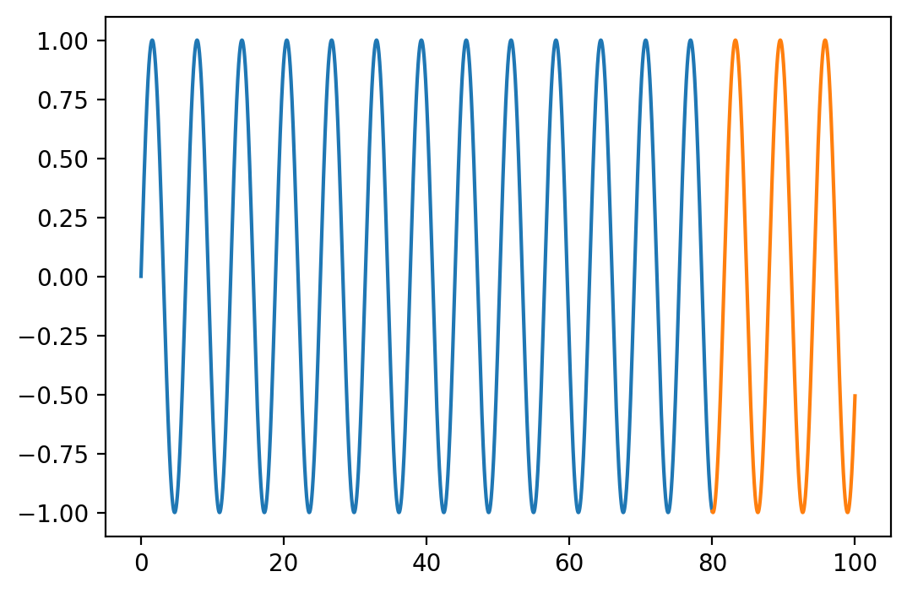
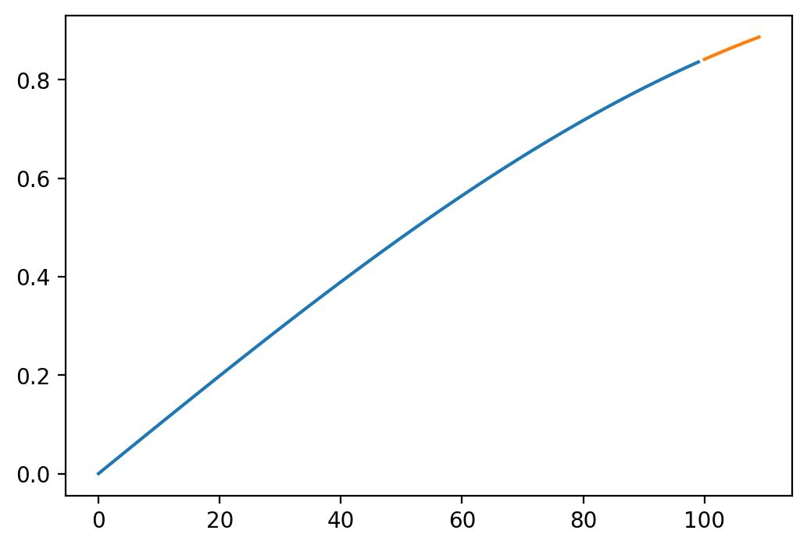
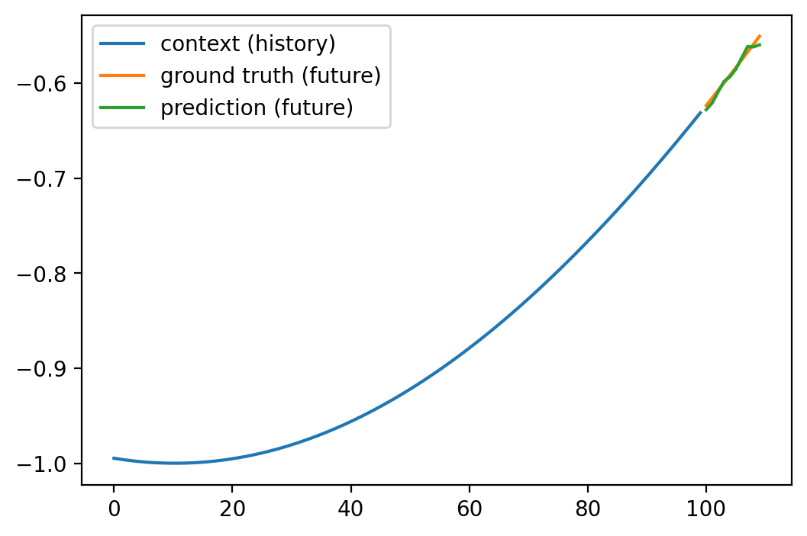
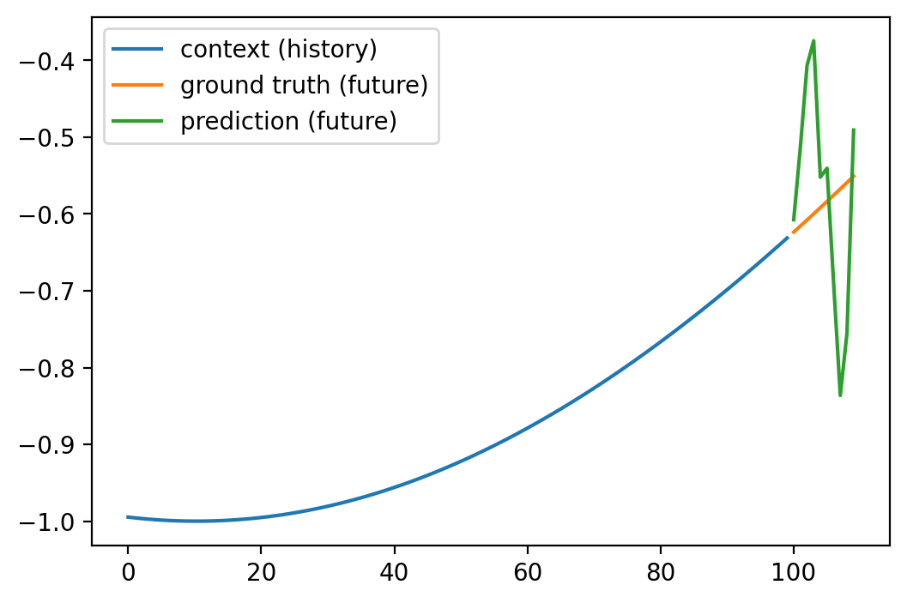

import numpy as np
import matplotlib.pyplot as plt
%matplotlib inline
%config InlineBackend.figure_format = 'retina'
import torch
import torch.nn as nn
import torch.nn.functional as F
from einops import rearrange, reduce, repeat
import time—author: Nipun Batrabadges: truecategories:- MLdate: ’2024-05-30’title: Time Series Forecasting - Comparing MLP and Transformer Modelstoc: true—
# sine dataset
X_whole = torch.linspace(0, 100, 10000)
y_whole = torch.sin(X_whole)
# split into train and test
X_train = X_whole[:8000]
y_train = y_whole[:8000]
X_test = X_whole[8000:]
y_test = y_whole[8000:]
# plot
plt.figure(figsize=(6, 4))
plt.plot(X_train, y_train, label='train')
plt.plot(X_test, y_test, label='test')
y_train.shapetorch.Size([8000])context_length = 100 # history
prediction_length = 10 # future to predictclass MLP(nn.Module):
def __init__(self, input_dim, prediction_length):
super(MLP, self).__init__()
self.fc1 = nn.Linear(input_dim, 128)
self.fc2 = nn.Linear(128, 128)
self.fc3 = nn.Linear(128, 128)
self.fc4 = nn.Linear(128, prediction_length)
def forward(self, x):
x = F.relu(self.fc1(x))
x = F.relu(self.fc2(x))
x = F.relu(self.fc3(x))
x = self.fc4(x)
return x
i = 0
y_train[i:i+context_length].shape, y_train[i+context_length:i+context_length+prediction_length].shape(torch.Size([100]), torch.Size([10]))# create training data
def create_train_data(X, y, context_length, prediction_length):
Xs, ys = [], []
for i in range(len(X) - context_length - prediction_length):
Xs.append(y[i:i+context_length])
ys.append(y[i+context_length:i+context_length+prediction_length])
return torch.stack(Xs), torch.stack(ys)Xs, ys = create_train_data(X_train, y_train, context_length, prediction_length)# Plot the first training data example
plt.figure(figsize=(6, 4))
plt.plot(Xs[0], label='context (history)')
plt.plot(range(context_length, context_length+prediction_length), ys[0], label='prediction (future)')
mlp = MLP(context_length, prediction_length)
print("Number of parameters:", sum(p.numel() for p in mlp.parameters()))
optimizer = torch.optim.Adam(mlp.parameters(), lr=1e-3)
criterion = nn.MSELoss()
# training loop
n_epochs = 100
start_time = time.time()
for epoch in range(n_epochs):
optimizer.zero_grad()
y_pred = mlp(Xs)
loss = criterion(y_pred, ys)
loss.backward()
optimizer.step()
if epoch % 10 == 0:
print(f'Epoch {epoch} - Loss {loss.item():.4f} Time (s) {time.time() - start_time: .2f}')Number of parameters: 47242
Epoch 0 - Loss 0.4968 Time (s) 0.02
Epoch 10 - Loss 0.1697 Time (s) 0.15
Epoch 20 - Loss 0.0666 Time (s) 0.28
Epoch 30 - Loss 0.0046 Time (s) 0.41
Epoch 40 - Loss 0.0038 Time (s) 0.54
Epoch 50 - Loss 0.0019 Time (s) 0.64
Epoch 60 - Loss 0.0004 Time (s) 0.74
Epoch 70 - Loss 0.0002 Time (s) 0.84
Epoch 80 - Loss 0.0001 Time (s) 0.97
Epoch 90 - Loss 0.0001 Time (s) 1.12X_test.shape, y_test.shape(torch.Size([2000]), torch.Size([2000]))# Test data
Xs_test, ys_test = create_train_data(X_test, y_test, context_length, prediction_length)Xs_test.shape, ys_test.shape(torch.Size([1890, 100]), torch.Size([1890, 10]))y_hat = mlp(Xs_test)
# compute the loss
with torch.no_grad():
loss = criterion(y_hat, ys_test)
print(f'Test Loss: {loss.item():0.4f}')Test Loss: 5.9333124227123335e-05Xs_test.shape, y_hat.shape(torch.Size([1890, 100]), torch.Size([1890, 10]))# Plot the first test data example
def plot_prediction(i):
plt.figure(figsize=(6, 4))
plt.plot(Xs_test[i], label='context (history)')
plt.plot(range(context_length, context_length+prediction_length), ys_test[i], label='ground truth (future)')
plt.plot(range(context_length, context_length+prediction_length), y_hat[i].detach().numpy(), label='prediction (future)')
plt.legend()
plot_prediction(0)
# Simple Transformer
class Transformer(nn.Module):
def __init__(self, input_dim, prediction_length, num_heads=8, num_layers=3):
super(Transformer, self).__init__()
self.prediction_length = prediction_length
self.num_heads = num_heads
self.num_layers = num_layers
self.emb = nn.Linear(input_dim, 32)
encoder_layer = nn.TransformerEncoderLayer(d_model=32, nhead=num_heads)
self.transformer_encoder = nn.TransformerEncoder(encoder_layer, num_layers=num_layers)
self.fc = nn.Linear(32, prediction_length)
def forward(self, x):
x = self.emb(x)
x = self.transformer_encoder(x)
x = self.fc(x)
return xtransormer = Transformer(context_length, prediction_length, num_heads=4, num_layers=3)
print("Number of parameters:", sum(p.numel() for p in transormer.parameters()))
optimizer = torch.optim.Adam(transormer.parameters(), lr=1e-3)
criterion = nn.MSELoss()
# training loop
n_epochs = 100
start_time = time.time()
for epoch in range(n_epochs):
optimizer.zero_grad()
y_pred = transormer(Xs)
loss = criterion(y_pred, ys)
loss.backward()
optimizer.step()
if epoch % 10 == 0:
print(f'Epoch {epoch} - Loss {loss.item():.4f} Time {time.time() - start_time: .2f}')
Number of parameters: 416074
Epoch 0 - Loss 1.0997 Time 22.90
Epoch 10 - Loss 0.0648 Time 181.78
Epoch 20 - Loss 0.0348 Time 292.99
Epoch 30 - Loss 0.0191 Time 410.26--------------------------------------------------------------------------- KeyboardInterrupt Traceback (most recent call last) Cell In[110], line 14 12 y_pred = transormer(Xs) 13 loss = criterion(y_pred, ys) ---> 14 loss.backward() 15 optimizer.step() 16 if epoch % 10 == 0: File ~/miniconda3/lib/python3.9/site-packages/torch/_tensor.py:487, in Tensor.backward(self, gradient, retain_graph, create_graph, inputs) 477 if has_torch_function_unary(self): 478 return handle_torch_function( 479 Tensor.backward, 480 (self,), (...) 485 inputs=inputs, 486 ) --> 487 torch.autograd.backward( 488 self, gradient, retain_graph, create_graph, inputs=inputs 489 ) File ~/miniconda3/lib/python3.9/site-packages/torch/autograd/__init__.py:200, in backward(tensors, grad_tensors, retain_graph, create_graph, grad_variables, inputs) 195 retain_graph = create_graph 197 # The reason we repeat same the comment below is that 198 # some Python versions print out the first line of a multi-line function 199 # calls in the traceback and some print out the last line --> 200 Variable._execution_engine.run_backward( # Calls into the C++ engine to run the backward pass 201 tensors, grad_tensors_, retain_graph, create_graph, inputs, 202 allow_unreachable=True, accumulate_grad=True) KeyboardInterrupt:
# Prediction
with torch.no_grad():
y_hat = transormer(Xs_test)
loss = criterion(y_hat, ys_test)
print(f'Test Loss: {loss.item()}') Test Loss: 0.017046289518475533# Plot the first test data example
plot_prediction(0)
from transformers import InformerForPrediction, InformerConfig
config = InformerConfig(
input_dim=context_length,
prediction_length=prediction_length,
num_heads=4,
encoder_layers=2,
decoder_layers=2,
use_mask=True,
forecast=True
)
informer = InformerForPrediction(config)sum(p.numel() for p in informer.parameters())134531# training loop
n_epochs = 100
start_time = time.time()
for epoch in range(n_epochs):
optimizer.zero_grad()
y_pred = informer(Xs, past--------------------------------------------------------------------------- TypeError Traceback (most recent call last) Cell In[117], line 7 5 for epoch in range(n_epochs): 6 optimizer.zero_grad() ----> 7 y_pred = informer(Xs) 8 loss = criterion(y_pred, ys) 9 loss.backward() File ~/miniconda3/lib/python3.9/site-packages/torch/nn/modules/module.py:1501, in Module._call_impl(self, *args, **kwargs) 1496 # If we don't have any hooks, we want to skip the rest of the logic in 1497 # this function, and just call forward. 1498 if not (self._backward_hooks or self._backward_pre_hooks or self._forward_hooks or self._forward_pre_hooks 1499 or _global_backward_pre_hooks or _global_backward_hooks 1500 or _global_forward_hooks or _global_forward_pre_hooks): -> 1501 return forward_call(*args, **kwargs) 1502 # Do not call functions when jit is used 1503 full_backward_hooks, non_full_backward_hooks = [], [] TypeError: forward() missing 2 required positional arguments: 'past_time_features' and 'past_observed_mask'